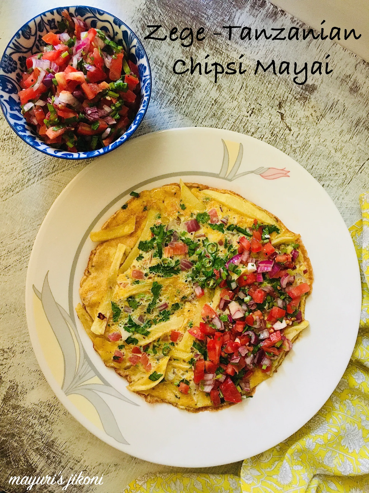
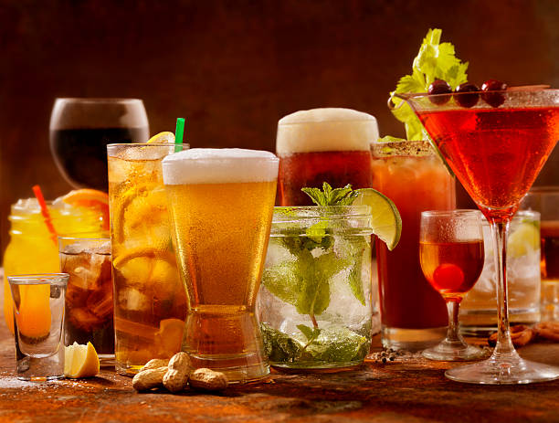

Free meals
Food, drinks and treats are free for everyone who comes.

Fries with eggs A Tanzanian favourite: crispy fries cooked in a fluffy omelette. Pizza
Freshly baked, with plenty of flavours for everyone.
Pizza
Freshly baked, with plenty of flavours for everyone.

Drinks Soft drinks, water and traditional beverages. Desserts
Cakes, pastries and Afro-Caribbean sweet treats.
Desserts
Cakes, pastries and Afro-Caribbean sweet treats.
 Snacks
Chips, nuts and other finger foods.
Snacks
Chips, nuts and other finger foods.